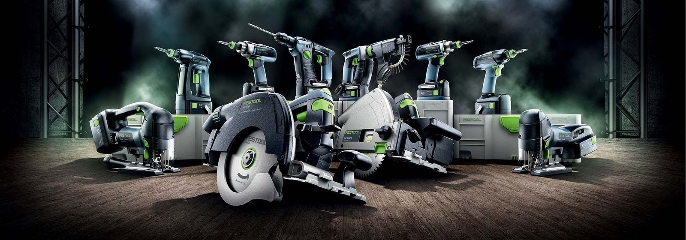
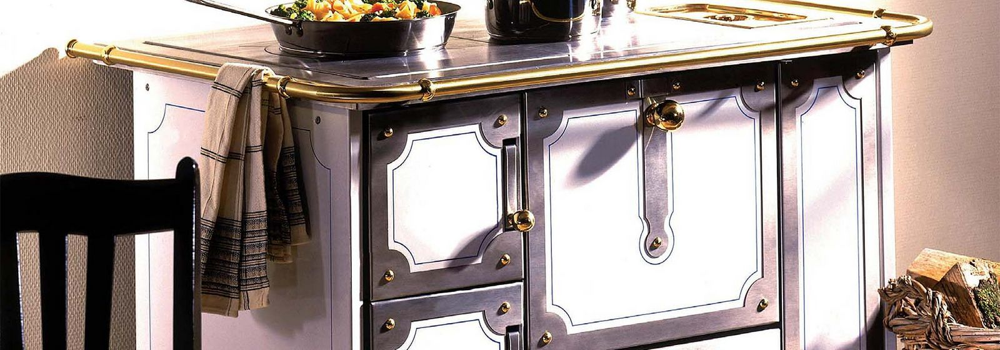

Holzkochherde
Heizen & Kochen
Elektrowerkzeuge, Holzkochherde und Schliesstechnik. Im Fachgeschäft an der Hohengasse in Burgdorf.
Sortiment ansehen ↘
Heizen & Kochen
Für Werkstatt & Baustelle
Für Haus & Garten
Für sichere Zugänge
Für Gebäude & Werte
Für die Holzarbeit

Das Geschäft der E. Seiler AG befindet sich an der Hohengasse 31 in Burgdorf. Das Sortiment reicht von Holzkochherden über Elektrowerkzeuge und Pumpen bis zur Schliesstechnik.
E. Seiler AG
Burgdorf BE
034 420 13 00